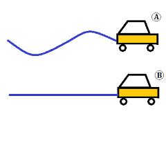

¿Qué es el movimiento?
El movimiento es el cambio de posición de un cuerpo (partícula, objeto o sistema) a lo largo del tiempo, con respecto a un punto de referencia considerado fijo.
Tipos de movimiento
Existen movimientos rectilíneos, circulares y oscilatorios. Cada tipo tiene características y ecuaciones diferentes para describir su comportamiento.

Ejemplos cotidianos
El caminar, la caída de un objeto o el giro de una rueda son ejemplos de movimiento. Todo lo que cambia de posición realiza un movimiento.